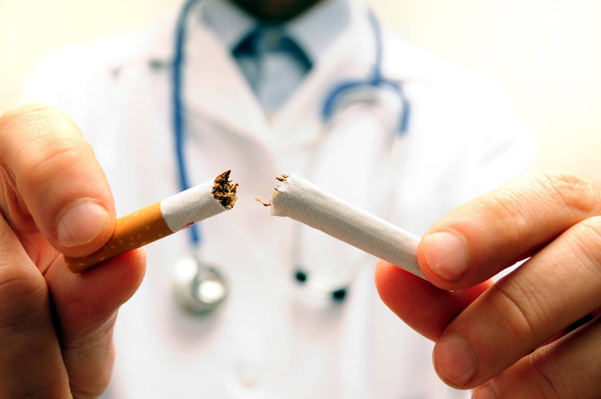
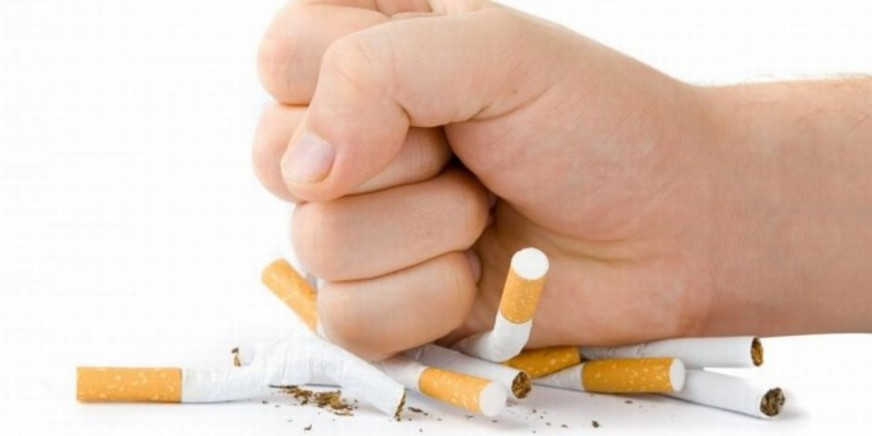
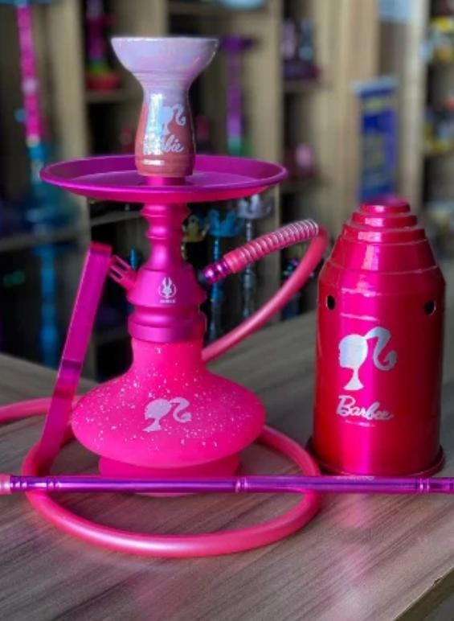
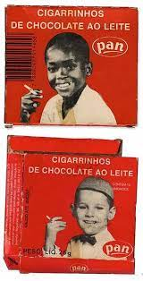
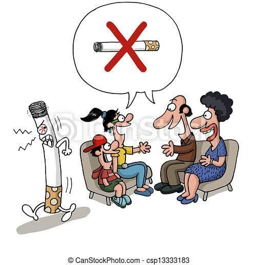
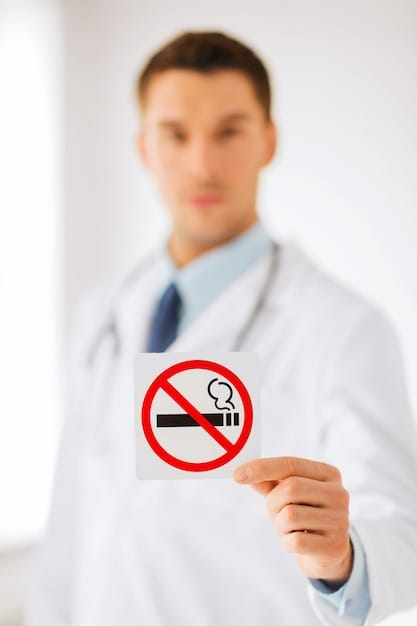
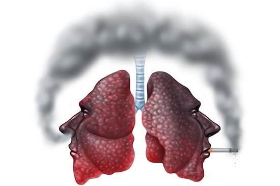
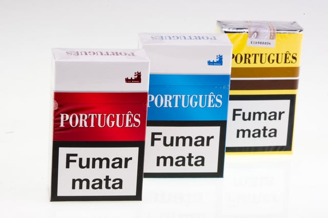

O que é tabagismo?
O tabagismo é uma doença epidêmica que causa dependência de nicotina, causando dependência física, química, psicológica e comportamental. Equivalente ao o que acontece com drogas ilícitas, tais como: a heroína e a cocaína. Ou a drogas lícitas como o álcool. A dependência ocorre pois com o uso de produtos a base de tabaco o corpo libera substâncias como dopamina e endorfina, substâncias associadas ao prazer, ocasiona o aumento da frequência cardíaca, ativa o nosso estado de alerta e o tempo de reação do corpo. O tabaco é uma planta (NICOTIANA) e de suas plantas são confeccionados os produtos com a nicotina como princípio ativo, porém em sua maioria são adicionados aditivos para aumentar o vício. Normalmente na primeira vez provando produtos a base de tabaco a pessoa sente náuseas e tosse porém muitos continuam com a prática por causa da pressão social e pelo prazer que as substâncias causam no corpo humano. Este vício, faz com que os fumantes inalem mais de 4.720 substâncias tóxicas. Toxinas essas são relacionadas a mais de 50 doenças. Estudos revelam que os fumantes, comparados aos não fumantes, apresentam um risco 10 vezes maior de adoecer de câncer de pulmão, 5 vezes maior de sofrer infarto, 5 vezes maior de sofrer de bronquite crônica e enfisema pulmonar e 2 vezes maior de sofrer derrame cerebral.
Prevenção ao Tabagismo
-Evitar o cigarro ajuda na prevenção de aproximadamente 50 doenças (dentre elas estão o câncer de pulmão, colo do útero, doenças respiratórias e cardiovasculares)
-Não fumar beneficia também a saúde daquele a sua volta, como por exemplo um casal, a esposa fuma e o marido não, ele está sendo prejudicado com a inalação involuntária só no fato de estar convivendo com ela, um colega de trabalho.
-uma das principais prevenções ao tabagismo é o auxílio da família, dos colegas mais próximos.
-O lugar onde deveriam ter auxílio sobre a prevenção do tabagismo seria nas escolas, tanto pública quanto privada, ensinar crianças e adolescentes a importância de não fumar, independente do aparelho de fumo.
-Nos dias atuais seria importantíssimo que tivesse auxílio dentro das escolas, pois não existem só o cigarro ou tabaco, mas também o Narguilé e Cigarro eletrônico, e são os jovens que estão sendo mais afetados por esses aparelhos, com problemas respiratórios e cardiovasculares.
Tipos do Cigarro

Todos os componentes do cigarro são nocivos à saúde. A concentração de nicotina no cigarro costuma ser menor do que as de outras formas de consumo do tabaco, sendo necessário fumar mais para abater o vício, assim, tendo:
Narguilé:
Uma sessão de narguilé de 80 minutos equivale a nada menos do que fumar 100 cigarros. O narguilé contém as mesmas substâncias toxicas do tabaco: nicotina, alcatrão, monóxido de carbono e metais pesados. No entanto ele possui uma concentração maior de nicotina, tornando maior o risco de dependência.
Cachimbo:
As chances de a pessoa ficar viciada em cachimbo não são muito diferentes das do cigarro e esse tipo também está associado ao aumento da mortalidade por câncer de pulmão, laringe, esôfago e outros graves problemas na cavidade oral.
Charuto:
Quem fuma charuto apresenta um aumento de 45% no risco de desenvolver doença crônica e 27% mais chances de sofrer de doenças cardiacas. O charuto mantém as folhas do tabaco inteiras e não possui filtro, intensificando os danos.
Cigarro de palha:
Mais conhecido como palheiro, a diferença desse tipo para o cigarro industrializado é que o fumo é envolto em palha em vez de papel e não possui qualquer tipo de filtro, sendo a forma mais nociva de inalação da fumaça, um cigarro de palha equivale a fumar três cigarros industrializados. É comum encontrá-lo em regiões rurais.
Vape (cigarro eletrônico):
O vape forma um vapor e mesmo sendo nicotina, o cigarro eletrônico faz mal por conter diversos outros produtos químicos potencialmente tóxicos. O próprio dispositivo pode desprender nanopartículas de metal. Ele pode explodir durante o consumo, não existe controle de qualidade, por ser proibida a sua produção.
Politicas Públicas
LEGISLAÇÃO FEDERAL SOBRE TABACO NO BRASIL
PROTEÇÃO À SAÚDE RECOMENDA MEDIDAS RESTRITIVAS AO FUMO NOS AMBIENTES DE TRABALHO. PROIBE O USO EM RECINTO COLETIVO,PRIVADO OU PÚBLICO:REPARTIÇÃO PÚBLICA,HOSPITAIS,SALAS DE AULA,AMBIENTE DE TRABALHO,BIBLIOTECAS,TEATROS E CINEMAS. PROÍBIDO O USO DE FUMÍGENOS DERIVADOS DO TABACO EM AERONAVES E DEMAIS VEÍCULOS DE TRANSPORTE COLETIVO. RECOMEMDA ÀS INSTITUIÇÕES DE SAÚDE E DE ENSINO A IMPLANTAREM PROGRAMAS DE AMBIENTES LIVRES DA EXPOSIÇÃO TABAGÍSTICA AMBIENTAL. PREVENÇÃO A ACIDENTES DE TRANSITO PROIBE FUMAR AO DIRIGIR OU DIRIGIR VEÍCULO COM APENAS UMA DAS MÃOS. RESTRIÇÃO AO ACESSO DOS PRODUTOS DERIVADOS DO TABACO PROIBE A VENDA POSTAL,A DISTRIBUIÇÃO DE AMOSTRA OU BRINDE E COMERCIALIZAÇÃO EM ESTABELECIMENTO DE ENSI E DE SAÚDE. PROIBE A VENDA DE DERIVADOS DO TABACO NA INTERNET. PROTEÇÃO AOS JOVENS PROIBE VENDER,FORNECER OU ENTREGAR, A CRIANÇAS E ADOLECENTES,PRODUTOS CUJOS COMPONENTES POSSAM CAUSAR DEPENDÊNCIA FÍSICA OU PSÍQUICA. PROIBE A PARTICIPAÇÃO DE CRIANÇAS E ADOLECENTE NA PUBLICIDADE DE PRODUTOS DERIVADOS DO TABACO. PROIBE TRABALHO DO MENOR DE 18 ANOS NA COLHEITA,BENEFICIAMENTO OU INDUSTRIALUZAÇÃO DO FUMO. PROIBE A PROPAGANDA DE ALIMENTOS NA FORMA DE CIGARRO ETC E EMBALAGENS DE ALIMENTOS QUE SIMULEM OU IMITEMAS EMBALAGEND DE CIGARRO. PROIBIDO A VENDA A MENORES DE 18 ANOS. TRATAMENTO E APOIO AO FUMANTE AMPLIA A PREVENÇAO E O TRATAMENTO NO SISTEMA ÚNICO DE SAÚDE. PUBLICIDADE E PATROCÍNEO DOS PRODUTOS DERIVADOS DO TABACO DETERFMINA QUE A PUBLICIDADE DE TABACO ESTARÁ SUJEITA Á RESTRIÇÕES LEGAIS E CONTERÁ RESTRIÇÕES LEGAIS E CONTERÁ ADVERTÊNCIA SOBRE OS MALEFICIOS DE SEU USO. PROIBE PROPOGANDAS ENGAOSAS E ABUSIVAS. RECOMENDA ÀS EMISSORAS DE TV QUE EVITEM IMAGENS DE PERSONALIDADES FUMANDO. RESTINGE PUBLICIDADE SOMENTE NO PONTO DE COMERCIALIZAÇÃO. PROIBE O PATROCÍNIO DE EVENTOS ESPORTIVOS NACIONAIS E CULTURAIS. DESSEMINAÇÃO DE INFORMAÇÃO AO PÚBLICO CRIA O DIA NACIONAL DE COMBATE AO FUMO 29 DE AGOSTO. CONFERE CERTIFICADO DE HONRA AO MÉRITO ÁS EMPRESAS QUE SE DESTACAREM EM CAMPANHA PARA O CONTROLE DO TABAGISMO. DETERMINA PROPAGANGA DE ADVERTÊNCIA ACOMPANHADAS DE IMAGENS QUE ILUSTREM O SEU SENTIDO. CERTIFICADO DE HONRA AO MÉRITO A INSTITUIÇÕES DE ENSINO E SAÚDE QUE SE DESTACAREM EM CAMPANHAS PARA A PREVENÇÃO DO TABAGISMO. INSERÇÃO DO TEMA CONTROLE DO TABAGISMO NA EDUCAÇÃO A DISTANCIA, PROMOVIDO PELO PROGRAMA TV ESCOLA. CONTROLE E FISCALIZAÇÃO DOS PRODUTOS DERIVADOS DO TABACO DETERMINA A COMERCIALIZAÇÃO DE CIGARROS NO PAÍS SOMENTE EM MAÇOS DE NO MÍNIMO 20 CIGARROS. DEFINE O SISTEMA NACIONAL DE VIGILÂNCIA SANITÁRIA PARA REGULAMENTAÇÃO ,CONTROLE E FISCALIZAÇÃO. ESTABELE OS TEORES MÁXIMOS PERMITIDOS DE ALCATRÃO NICOTINA E MONÓXIDO DE CARBONO E PROIBE ESCRITOS NA EMBALAGEM Q POSSAM INDUZIU A UMA INTERPRETAÇÃO EQUIVOCADA QUANTO AOS TEORES CONTIDOS NOS CIGARROS SUAVE LIGHT SOFT TEORES BAIXOS .... ESTABELECE NOVAS NORMAS PARA O CADASTRO ANUAL DAS EMPRESA BENEFICIADORAS DE TABACO E FABRICANTES NACIONAIS EM RELAÇÃO A RELATÓRIS SOBRE SEUS COMPONENTES. CONTROLE DO TABACO PROGRAMA FISCAL QUE PROÍBE SONEGAÇÃO DE IMPOSTO E CONTRABANDO FINANCIAMENTO Á CULTURA DO TABACO VEDADA A CONCESSÃO DE CRÉDITO PÚBLICO RELACIONADO CO A PRODUÇÃO DE FUMO. TAXAÇÃO SOBRE OS PRODUTOS DE TABACO ELEVA O VALOR DO IMPOSTO SOBRE PRODUTOS INDUSTRIALIZADOS INCIDENTE SOBRE OS CIGARROS. MEDIDAS PARA CONTER O MERCADO ILEGAL DE CIGARROS DETERMINA Q OS CIGARROS QUANDO ESPORTADOS PARA A AMÉRICA DO SUL E CENTRAL, INCLUSIVE CARIBE, FICAM SUJEITOS A INCIDÊNCIA DO IMPOSTO DE EXPORTÇÃO À ALÍQUOTA DE 150%. POSTERIOMENTE, HOUVE AMPIANÇÃO PARA MATÉRIAS PRIMAS NA FABRICAÇÃO DE CIGARROS. EXPORTAÇÃO DEVERÁ SER FEITA PELO ESTABELECIMENTO INDUSTRIAL DIRETAMENTE PARA O IMPORTADOR NO EXTERIOR E QUE OS SELOS DE LEGITIMIDADE PASSARÃO POR EXAME MAIS RIGOROSO. FONTE: SITE INTERNET SETOR DE LEGISLAÇÃO CONPREV INCA
Papel da Familia
O Papel da Família perante o Tabagista
A Família desempenha um papel fundamental para ajudar e apoiar o familiar tabagista. Dando o segundo passo, sendo o primeiro do próprio fumante, na incentivação para a cessação do vício.
- Demonstrar importância.
- Incentivar na busca por orientação médica e psicológica para um tratamento adequado.
- Motivar a continuar, sempre!
- A distração ajuda a substituir o sentimento de perda.
- Não o julgue. Recaídas acontecem.
- Evitar locais que tenham relação com o cigarro e pessoas fumando.
- Estimular hábitos saudáveis.
- Seja companheiro.
"O planejamento de ações no âmbito familiar, na conscientização sobre os danos que o tabaco poderá causar e inspiração para hábitos saudáveis seriam, sim, medidas de extrema importância para a prevenção e controle do tabagismo." - Autora: Telma de Almeida Souza - 09/2012
Educação
Prevenção nas Escolas
Você sabia que em 31 de maio é celebrado o Dia Mundial sem Tabaco? A data foi criada pela Organização das Nações Unidas (ONU), em 1987, para alertar sobre doenças e mortes evitáveis relacionadas ao tabaco. Aqui no Brasil, o Instituto Nacional de Câncer (INCA) é o responsável por divulgar e elaborar materiais técnicos. Esta é uma data importante para as escolas porque não há nada melhor do que conscientizar crianças e adolescentes antes mesmo que iniciem o vício, alertando sobre os riscos associados ao uso de substâncias como o tabaco. Uma boa forma de abordar o tema tabagismo com crianças e adolescentes é fazendo uso de depoimentos de quem já fumou, conseguiu parar, mas teve dificuldade. Ou com ex-fumantes que tiveram doenças, mesmo após interromper o uso do tabaco. É importante que os jovens saibam como dizer não a uma oferta de experimentação do tabaco, ou de qualquer outra droga. Mais o essencial é que entendam o porquê dizer não. Com a disseminação de informações pautadas em dados e evidências, a criança ou o adolescente entenderá perfeitamente quais os males causados pelo hábito de fumar e, então, porque recusar aquela oferta, mesmo que pareça tentadora. Ilustre situações e ensine como escapar delas da melhor maneira, fazendo escolhas que visam a conservação de sua saúde. A campanha contra o uso de tabaco deve ser espalhada por todos os canais de comunicação da escola, isso inclui peças digitais, no site, nas redes sociais, nos aplicativos, e peças impressas, em murais, nas salas de aula e demais dependências da escola. Os alunos devem estar envolvidos na produção destes avisos e cartazes. As informações podem e devem se estender aos pais e responsáveis, com a proposta de ações conjuntas, em casa e na escola, para o combate ao fumo. As políticas públicas de saúde afirmam que a escola é um espaço privilegiado para o desenvolvimento de ações promotoras, preventivas e de educação para a saúde, ela é um ambiente onde o adolescente está inserido. Logo, a mesma pode propiciar informações que promovam a saúde e a educação. Percebe-se, contudo, que a escola tem um espaço de relações fundamental para desenvolver a visão crítica dos indivíduos, que ajuda na construção de valores pessoais e interferem diretamente na responsabilidade social e da saúde. Por fim reforçamos a importância da escola e professores como agentes promotores na prevenção do tabagismo, por meio da promoção de ações educativas, palestras, seminários, campanhas e programas de saúde ou de educação, reforçando a conscientização dos malefícios, e prevenindo o consumo entre os adolescentes.
Fumante Passivo
Tabagismo passivo é a inalação da fumaça de derivados do tabaco, tais como cigarro,charuto, cigarrilhas, cachimbo, narguilé e outros produtores de fumaça, por indivíduos não fumantes que convivem com fumantes em diferentes ambientes respirando as mesmas substâncias tóxicas que o fumante inala. A exposição involuntária à fumaça do tabaco pode acarretar desde reações alérgicas (rinite, tosse, conjuntivite, exacerbação de asma) em curto período, até infarto agudo do miocárdio, câncer do pulmão e doença pulmonar obstrutiva crônica (enfisema pulmonar e bronquite crônica) em adultos expostos por longos períodos. fumaça que sai da ponta do cigarro e se difunde homogeneamente no ambiente, contém em média três vezes mais nicotina, três vezes mais monóxido de carbono e até 50 vezes mais substâncias cancerígenas do que a fumaça que o fumante inala . Crianças e bebês são mais suscetíveis ao tabagismo passivo e com risco aumentado de desenvolver doenças respiratórias, doença do ouvido médio e a síndrome da morte súbita infantil. Mulheres grávidas expostas ao tabagismo passivo correm maior risco de natimorto, malformações congênitas e feto com baixo peso ao nascer. Não há nível seguro de exposição ao tabagismo passivo e a única maneira de proteger adequadamente fumantes e não fumantes é eliminar completamente o tabagismo em ambientes fechados.
Pulicidade
Brasil e Turquia se tornaram referências internacionais no combate ao tabagismo, tendo alcançado o mais alto nível das 6 medidas MPoWer ( plano para reverter a epidemia do tabaco) de controle do tabaco. São elas: monitorar o uso do tabaco e as políticas de prevenção; proteger as pessoas contra o tabagismo; oferecer ajuda para parar de fumar; avisar sobre os perigos do tabaco; aplicar proibições à publicidade, produção e patrocínio do tabaco e aumentar os impostos sobre o tabaco. Proibição em locais fechados , públicos e privados ; as mensagens das embalagens dos cigarros ; a publicidade de tabaco foi proibida nos meios de comunicação e patrocínio de marcas de cigarro foi vetada em eventos culturais e esportivos. Relatório da OMS mostra que o maior crescimento , em termos de quantidade de pessoas beneficiadas foi registrado na área de aumento de imposto do tabaco . Ministério da saúde lança plataforma on LINE para prevenir e combater o tabagismo. Para melhor resultado.